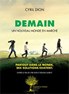
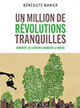
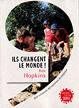
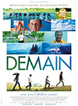
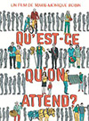

"Demain : un nouveau monde en marche" Cyril Dion 2015 "Un million de révolutions tranquilles : comment les citoyens changent le monde" Bénédicte Manier 2012"Ils changent le monde ! : 1001 initiatives de transition écologique" Rob Hopkins 2014"Manuel de transition" Rob Hopkins 2010
"Demain" Cyril Dion & Mélanie Laurent 2015"Qu'est-ce qu'on attend ?" Marie-Monique Robin 2016